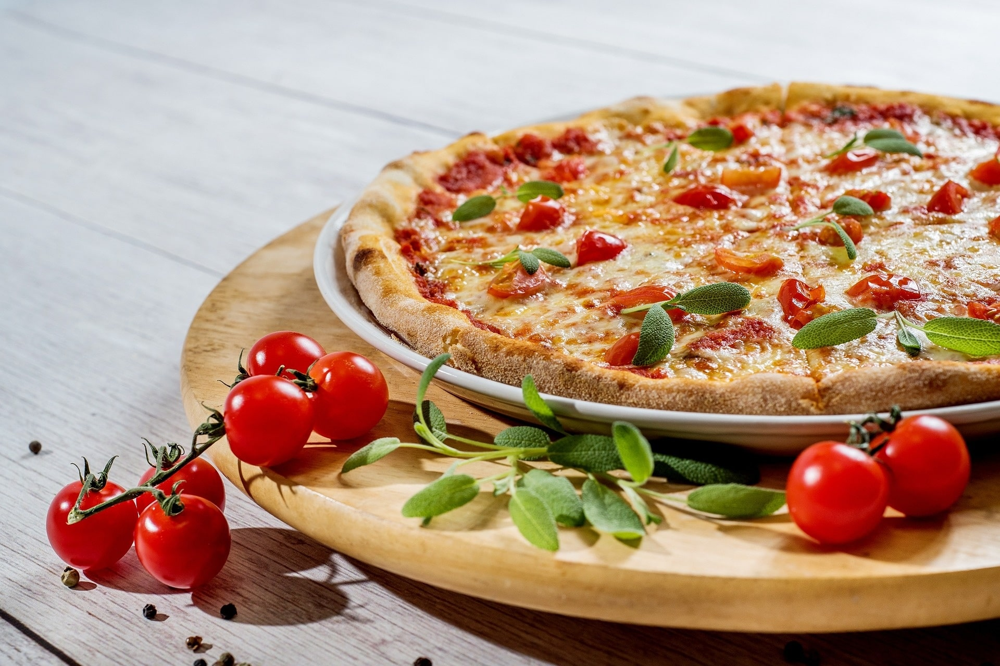

Vegetarian Margherita
- 
-
An easy, quick and tasty meal. Fun to make together with kids or friends.
If the dough is too wet, add a little more flour. Too stretchy, roll out and leave to rest for 10 minutes or so.
Course: Dinner
Plus Pizza Base: +60 minutes
Prep time: 10 minutes
Cook time: 10 minutes
Total time: 20 minutes
Ingredients
- 300 g Pizza Base Dough - see link
- 100 ml Passata
- 1 Handful Fresh Basil - For Sauce
- 1 Clove Garlic - Crushed
- 125 g Mozzarella Ball - Sliced
- 1 Handful Parmesan - Grated
- 1 Handful Cherry Tomatoes - Halved
- 1 Handful Basil Leaves - Garnish
Method
- Preheat the oven to 220C.
- Make the sauce: Mix the passata, basil (make sure to have some for the garnish) and crushed garlic together, then season to taste.
- Roll out the dough, give it a quick knead if necessary and split into a balls (one for each pizza).
- Place dough onto floured baking sheets.
- Spread sauce onto pizza base with the back of a spoon (modest is better).
- Sprinikle over the cheese and tomatoes and a drizzle ofo olive oil. Season to taste.
- Place in top shelf of oven for 8-10 minutes.
- Rip basil leaves and sprinkle over along with a little more olive oil.
- Serve and enjoy!